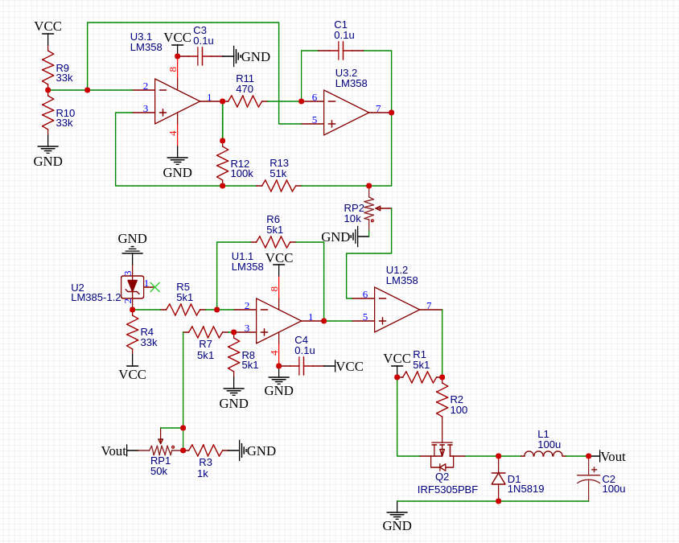

PROJECT OVERVIEW
Designing an adjustable DC power converter.
This project involved assembling, testing, and troubleshooting an adjustable DC-DC buck converter. The circuit uses a MOSFET switching stage, an LM358 op-amp control circuit, and feedback to regulate the output voltage.
The project was built as a hands-on power electronics project to better understand switching converters, feedback control, and practical circuit behavior.
OBJECTIVES
What I wanted to accomplish
- Build a functional DC-DC buck converter.
- Produce an adjustable output voltage.
- Use feedback to control the output.
- Test the circuit using real measurements.
- Diagnose and correct hardware problems.
CIRCUIT DESIGN
How the converter works
The circuit topology used for this project was based on the design presented by Sine Lab in "DIY Buck Converter - How do buck converters work?"
The schematic is credited to the original creator. My work involved assembling, testing, troubleshooting, and documenting the performance of the physical circuit.
View the original Sine Lab video →The converter uses a MOSFET as the primary switching element. The control circuit uses an LM358 op-amp to compare the feedback signal with the desired control voltage and adjust the switching behavior.
A potentiometer allows the desired output voltage to be adjusted. The feedback network samples the output and provides a corresponding voltage to the control circuit.

Reference schematic — Sine Lab
Circuit topology based on
"DIY Buck Converter - How do buck converters work?"
by Sine Lab.
View original source →
HARDWARE
Physical implementation
The circuit was assembled and tested using through-hole components and a breadboard prototype. Measurements were taken at important circuit nodes throughout the debugging process.
Photos of the physical circuit will be added here.
TESTING & TROUBLESHOOTING
Finding and fixing problems
The initial circuit did not regulate the output voltage correctly. I used a multimeter to measure voltages at the op-amp inputs, output, MOSFET terminals, and feedback network.
These measurements helped isolate problems in the feedback and MOSFET control sections of the circuit. I then corrected the circuit connections and continued testing the converter.
Oscilloscope measurements will be added here.
RESULTS
Final performance
After troubleshooting and correcting the circuit, the converter was able to produce an adjustable output voltage from approximately 0 V to 7.7 V using the available input supply.
The project demonstrated the practical challenges involved in building and debugging switching power electronics hardware.
WHAT I LEARNED
Lessons from the project
- How a buck converter regulates DC voltage.
- How MOSFET switching controls power flow.
- How feedback networks affect regulation.
- How to troubleshoot a circuit using measured voltages.
- The difference between simulated and real circuit behavior.